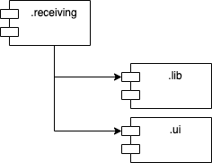

Purpose
The purpose of the Receiving service is to handle goods receipts. It offers an API to create incoming orders, so called Receiving Orders (expected receipts). These kind of receipts are announced before the actual goods are received. Blind receipts are supported as well. Those don't require any announcements and allow to capture goods that are not expected to receive.
Resources


Module Structure
The Receiving Service contains functional modules, each with its own API and functionality.

Build
The service can be built and started locally without any other services.
Build the code:
$ ./mvnw package
Run Standalone
Run in standalone mode:
$ java -jar target/openwms-wms-receiving-exec.jar
Run Distributed
Or additionally run in a distributed environment with an already running Service Registry, Configuration Server and a RabbitMQ broker:
$ java -Dspring.profiles.active=ASYNCHRONOUS,DISTRIBUTED,DEMO -jar target/openwms-wms-receiving-exec.jar